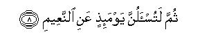

بسم الله الرحمن الرحيم
Sayyid Abul Ala Maududi - Tafhim al-Qur'an - The Meaning of the Qur'an
 102.
Surah At Takathur (The Mutual Rivalry)
102.
Surah At Takathur (The Mutual Rivalry)
The Surah taken its name from the word at takathur in the first verse.
Abu Hayyan and Shaukani say that this Surah, according to all commentators, is Makki, and this same is the well known view according to Iman Suyuti. However, there are some traditions, on the basis of which it is considered a Madani Surah, and they are as follows:
Ibn Abi Hatim has cited Abu Buraidah as saying that this Surah was sent down concerning the two tribes, Bani Harithah and Bani al-Harth, of the Ansar. The two tribes had first recounted the glories and illustrious deeds of their living men; then they had gone to the grave yard and bragged of the glorious deeds of their dead. Thereupon the Divine Revelation Alhakum at takathur came down. But, if the practice of the Companions and their successors concerning the occasions of revelation, is kept in view, this tradition is no argument to prove that Surah At Takathur was sent down on that very occasion, but it shows that this Surah fully applied to the act of the two tribes.
Imam Bukhari and Ibn Jarir have cited this view of Hadrat Ubayy bin Ka'ab: "We took the Holy Prophet saying: “If the son of Adam had two valleys full of wealth, he would long for a third valley; the son of Adam's belly cannot be filled but by earth, to be from the Quran until Alhakum at takathur was sent down.”
This Hadith has been regarded as an argument for Surah At-Takathur to be a Madani Surah on the ground that Hadrat Ubayy had become a Muslim in Madinah. But Hadrat Ubayy's this statement does not indicate in what sense the Companions regarded this saying of the Holy Prophet (upon whom be peace) as belonging to the Quran. If it means that they regarded it as a verse of the Quran, it cannot be acceptable, for a great majority of the Companions consisted of the men who were well aware of each and every word of the Quran; they could not have the misunderstanding that the Hadith was a verse of the Quran. And if its belonging to the Quran is taken to mean its being derived from the Quran, the tradition can also mean that when the Companions who entered Islam in Madinah, heard this Surah for the first time from the Holy Prophet, they thought that it had been revealed just then, and then about the Holy Prophet's above saying they formed the idea that it was derived from this very Surah.
Ibn Jarir Tirmidhi, Ibn al Mundhir and other traditionists have related this view of Hadrat Ali: "We were in doubt about the torment of the grave until Alhakum at takathur was sent down." This view has been regarded as an argument for Surah At-Takathur to be Madani on the ground that the torment of the grave was first mentioned at Madinah; no mention of it was ever made at Makkah. But this is wrong. In the Makki Surahs of the Quran, the torment of the grave has been mentioned at many places so clearly that there can he no room for any such doubt; for example, see Al- An'am: 93, An-Nahl: 28, Al-Muminun: 99-100, Al-Mu'min: 45-46, which are all Makki Surahs. Therefore, if anything is proved by Hadrat Ali's saying, it is that Surah At-Takathur had been revealed before the revelation of the above mentioned Makki Surahs and its revelation had removed the Companions doubt about the torment of the grave.
That is why, in spite of these traditions, a great majority of the commentators are agreed that this Surah is Makki. In our opinion this is not only a Makki Surah but in view of its contents and style it is one of the earliest Surahs to be revealed at Makkah.
In it the people have been warned of the evil consequences of world worship because of which they spend their lives in acquiring more and more of worldly wealth, material benefits and pleasures, and position and power, till death, and in vying with one another and bragging and boasting about their acquisitions. This one pursuit has so occupied them that they are left with no time or opportunity for pursuing the higher things in life. After warning the people of its evil end they have been told us if to say: "These blessings which you are amassing and enjoying thoughtlessly, are not mere blessings but are also a means of your trial. For each one of these blessings and comforts you will surely be called to account in the Hereafter."

In the name of Allah, the Compassionate, the Merciful.

[1-8] Your craze for more and more and mutual rivalry for worldly gains has made you heedless,1 until you reach the graves.2 By no means! Soon you shall know!3 Again (note it well) by no means! Soon you shall know. Nay! Had you known with certainty of knowledge (the end of this way of life you would never have acted thus). You shall certainly see Hell. Again (note it well that) you shall most certainly see it. Then, on that Day, you shall certainly be called to account for the blessings and comforts of life.4
1The words alhakum at-takathur of the original are too vast in meaning to be fully explained in a passage Alhakmn is from lahv which originally means heedlessness, but in Arabic this word is used for every occupation which engrosses man so completely that he becomes heedless of the more important things in life.
When the word alhakum is made from this root, it will mean that man has become so obsessed with some occupation that he has lost sight of everything more important than it. He is pre-occupied with it, is wholly lost in pursuit of it and this obsession has rendered him heedless of everything else in life.
Takathur is from kathrat, which has throe meanings:
(1) That man should strive to gain more and more of everything;
(2) that the people should vie with one another for gaining more and more; and
(3) that they should brag and boast of possessing greater abundance of things than others.
Therefore, alhakum at-takathur would mean: " Takathur (greed for more and more) has so occupied you that its pursuit has made you heedless of every higher thing in life." In this sentence it has not been indicated as to abundance of what is meant in takathur, heedlessness of what is implied in alhakrun, and who are the addresses of alhakum. In the absence of such an explanation, the words become applicable in their most general and extensive meaning. Thus, takathur does not remain restricted in meaning and application but applies to all the gains and benefits, pleasures and comforts, the passion for acquiring more and more means of power and authority, vying with others in pursuit of these and bragging and boasting of their abundance. Likewise, the addressees of alhakum also do not remain limited but the people of all ages, in their individual as well as collective capacity, become its addressees. It gives the meaning that the passion for acquiring more and more of the worldly wealth, vying with others in pursuit of it and bragging and boasting of its possession has affected individuals as well as societies. Like wise, since in alhakum at-takathur it has not been pointed out as to which people are engrossed in acquisitiveness and of what they are rendered heedless, it has also become very extensive in meaning. It means that the passion for piling up more and more has made the people heedless of everything more important than it. They have become heedless of God, of the Hereafter, of the moral bounds and moral responsibilities, of the rights of others and of their own obligations to render those rights. They are only after raising the standard of living and do not bother even if the standard of humanity be falling. They want to acquire more and more of wealth no matter how and by what means it is acquired. They desire to have more and more means of comfort and physical enjoyment and, overwhelmed by this greed, they have become wholly insensitive as to the ultimate end of this way of living. They are engaged in a race with others to acquire more and more of power, more and more of forces, more and more of weapons, and they have no idea that all this is a means of filling God's earth with tyranny and wickedness and of destroying humanity itself. In short, takathur has many forms, which have engrossed individuals as well as societies so completely that they have become heedless of everything beyond the world, its benefits and pleasures.
2That is, "You expend your whole life in the same craze and endeavor, until the time comes when you must die and leave the world."
3That is, "You are under the delusion that the abundance of the worldly goods and surpassing others in it, is real progress and success, whereas the opposite is the case. Soon you will know its evil end and you will realize that it was a stupendous error in which you remained involved throughout your life. "Soon" may mean the Hereafter, for, for the Being Whose sight comprehends all ages, from eternity to eternity, a few thousand years or a few hundred thousand years can only be a short span of the eternal time. But it can also mean death, for death is not very far away from any man, and soon after death man will come to know whether the occupations which engaged him throughout life were a means of good fortune and success for him, or of misfortune and failure.
4"Then" in this sentence does not mean that accountability will be held after the culprits have been cast into Hell, but it means: "Then We give you the news that you will be questioned about these comforts of life," and obviously this questioning will be held at the time of accountability in the Divine Court. Its chief argument is that in several Ahadith it has been reported from the Holy Prophet (upon whom be peace) that the believers and the disbelievers, both will have to account for the blessings granted by Allah. However, the people who did not show ingratitude but spent their lives as grateful servants of Allah, will come out successful from the accountability, and those who proved thankless to Allah for His blessings and committed ingratitude by word or by deed, or by both; will emerge as failures.
Hadrat Jabir bin `Abdullah says: "The Holy Prophet once visited us and we served him with fresh dates and gave him cool water to drink. Thereupon he said: "These are of the blessings about which you will be questioned." (Musnad Ahmad, Nasa'i, Ibn Jarir, Ibn al-Mundhir, Ibn Marduyah, `Abd bin Humaid, Baihaqi in Ash-Shu `ab).
Hadrat Abu Hurairah has reported that the Holy Prophet once asked Hadrat Abu Bakr and Hadrat `Umar to accompany him to the place of AbulHaitham bin at-Tahan Ansari. Thus, he took them to the oasis of Ibn at-Taihan-The latter brought a bunch of dates and placed it before them. The Holy Prophet said: "Why didn't you pluck the dates yourself? ` He said: "1 thought you would yourselves select and eat dates of your choice." So, they ate the dates and drank cool water. At the end, the Holy Prophet said: "By Him in Whose hand is my life: this is of the blessings about which you will be questioned on the Resurrection Day: the cool shade, the cool dates, the cool water." (This tradition has been narrated in different ways by Muslim, Ibn Majah, Abu Da'ud, Tirmidhi, Nasa'i, Ibn Jarir, Abu Ya`la and others, on the authority of Hadrat Abu Hurairah, in some of which the name of the Ansari Companion has been mentioned and in some he has been referred to as a person from among the Ansar. This incident has been related with several details by Ibn Abi Hatim from Hadrat `Umar and by Imam Ahmad from Abu `Asib, the Holy Prophet's freed slave. Ibn Hibban and Ibn Marduyah have related a tradition from Hadrat 'Abdullah bin 'Abbas, which shows that an almost similar thing had happened in the house of Hadrat Abu Ayyub Ansari.
These Ahadith make it explicit that not only the disbelievers but the righteous believers too will be questioned. As for the blessings which Allah has bestowed on man, they are unlimited and countless. There are many blessings of which man is not even conscious. The Qur'an says: "If you try to count the blessings of Allah, you will not be able to calculate them." (Ibrahim : 34). Countless of them are the blessings which Allah has granted directly to man, and a large number of these are the blessings which man is granted through his own skill and endeavor. About the blessings that accrue to man in consequence of his own labor and skill, he will have to render an account as to how he acquired them and in what ways he expended them. In respect of the blessings directly bestowed by Allah, he will have to give an account as to how he used them. And in respect of all the blessings, on the whole, he will have to tell whether he had acknowledged that those blessings had been granted by Allah and whether he had expressed gratitude for them to Allah with his heart, and by word and deed, or whether he thought he had received all that accidentally, or as' a gift from many gods, or whether he Geld the belief that although those were the blessings of One God, in their bestowal many other beings also had a part, and for that very reason he had taken them as his gods and worshiped and thanked them as such.